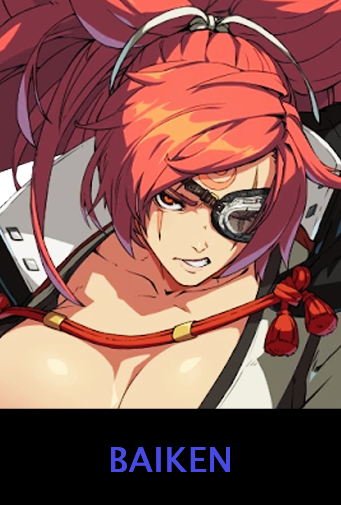
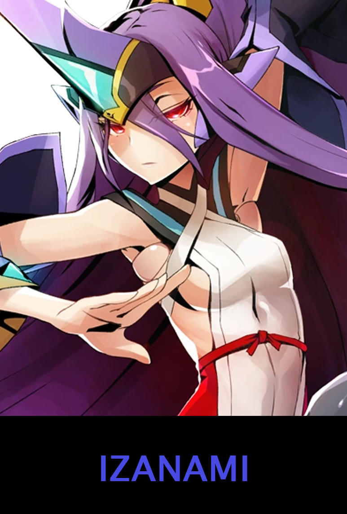
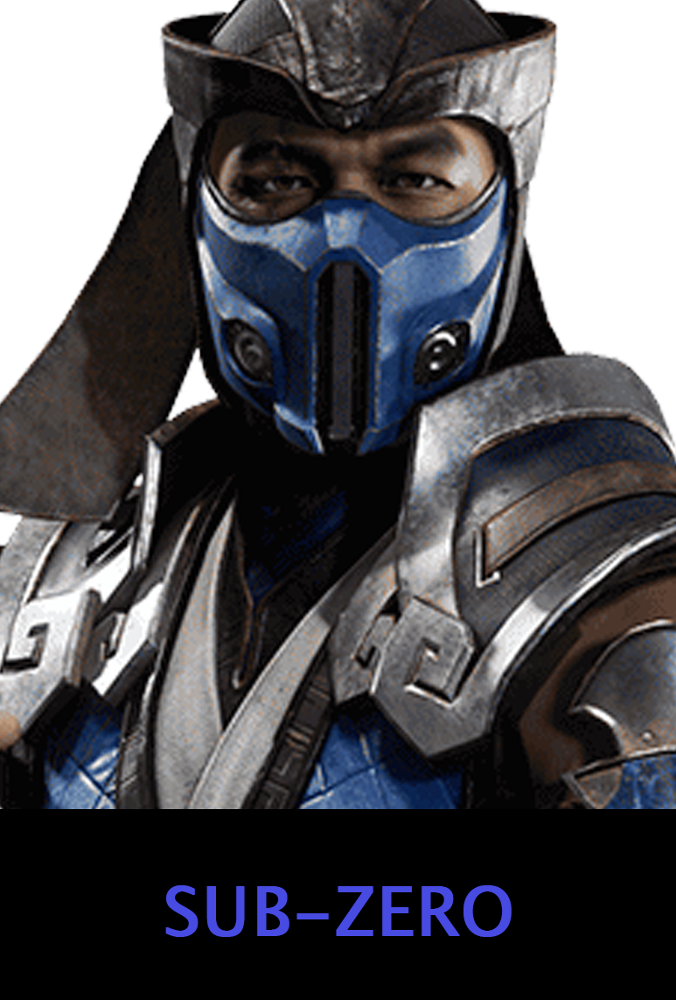

A short summary about just a few Fighting games currently available, however due to the size of the amount of Fighting games available and the amount of specefics, it is going to be hard to describe all of them. Hence I am only talking about the Fighting Games I play and love.
Guilty Gear
Guilty Gear (Japanese: ギルティギア, Hepburn: Giruti Gia) is a series of fighting games by Arc System Works, created and designed by artist Daisuke Ishiwatari. The first game was published in 1998, and has spawned several sequels. It has also adapted to other media such as manga and drama CD. Guilty Gear has generally received praise from video game reviewers for its highly technical gameplay, graphics, soundtrack, and for its characters. Another fighting game franchise by Arc System Works, BlazBlue, is considered a spiritual successor of the series.
Some characters

Tekken
Tekken (Japanese: 鉄拳, "Iron Fist") is a Japanese media franchise centered on a series of fighting video and arcade games developed by Bandai Namco Studios and published by Bandai Namco Entertainment. The franchise also includes film and print adaptations.
The main games in the series follow the events of the King of Iron Fist Tournament, hosted by the Mishima Zaibatsu, where players control a plethora of characters to win the tournament and gain control of the company; the conflict between the Mishima family serves as the main focus of the series' plot, while players explore other characters' motivations in aiming to control the Zaibatsu.
Gameplay focuses on hand-to-hand combat with an opponent, with the gameplay system including blocks, throws, escapes, and ground fighting. The series later introduced combos and special moves, with characters also able to stage break arenas. Tekken is noted as being one of the first fighting games at the time to use 3D animation.
Some characters
Blazblue
BlazBlue is a fighting video game series developed and published in Japan by Arc System Works, and later localized in North America by Aksys Games and in Europe by Zen United. An anime adaptation aired in autumn 2013. The game series has sold 1.7 million games in August 2012.[2]
Some characters

Mortal Kombat
Mortal Kombat is an American media franchise centered on a series of video games originally developed by Midway Games in 1992. The development of the first game was originally based on an idea that Ed Boon and John Tobias had of making a video game starring Jean-Claude Van Damme, but when that idea fell through, a science fantasy-themed fighting game was created instead. Still, the developers paid homage to him with Johnny Cage (one of the main characters in the many games), a fictional film star whose personal style resembles Van Damme's. The original Mortal Kombat was the first fighting game to introduce a secret fighter, reached if the player fulfilled a set of requirements.
Some characters

Dragon Ball FighterZ
Dragon Ball FighterZ (ドラゴンボール ファイターズ Doragon Bōru Faitāzu) is a Dragon Ball fighting game developed by Arc System Works and published by Bandai Namco. It was released on January 26, 2018 for North America and Europe, and was released February 1, 2018 in Japan.
Gameplay-wise, Dragon Ball FighterZ borrows concepts from several other fighting games, primarily the Marvel vs. Capcom series' control scheme and team mechanics, with three primary attack buttons and one unique action button plus a few others. The game plays out in a similar scheme toward many other of the traditional Arc System Works-developed fighting games. The basic controls of combat consists of multiple buttons: L (Light Attack), M (Medium Attack), H (Heavy Attack), S (Special Attack), A1 (Z Assist 1), A2 (Z Assist 2), and the the control stick/d-pad are used for movement.